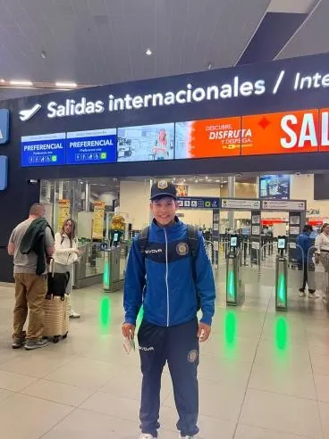

Plan padrino · Copa América Kids 2026
Apadrina un talento
Lleva a un niño a competir por Colombia en Porto Alegre, Brasil. Tu aporte cubre su viaje completo: tiquete, hotel e inscripción FIF7, alimentación, transporte, entrenamiento, sudadera y seguro.
USD 1.792por niño · COP 5.928.800
- Su historia y su tarjeta de jugadorConoces a quién apadrinas y cómo le va en el torneo.
- “Padrino de…” en nuestras redesY tu nombre o tu logo en el video de cierre.